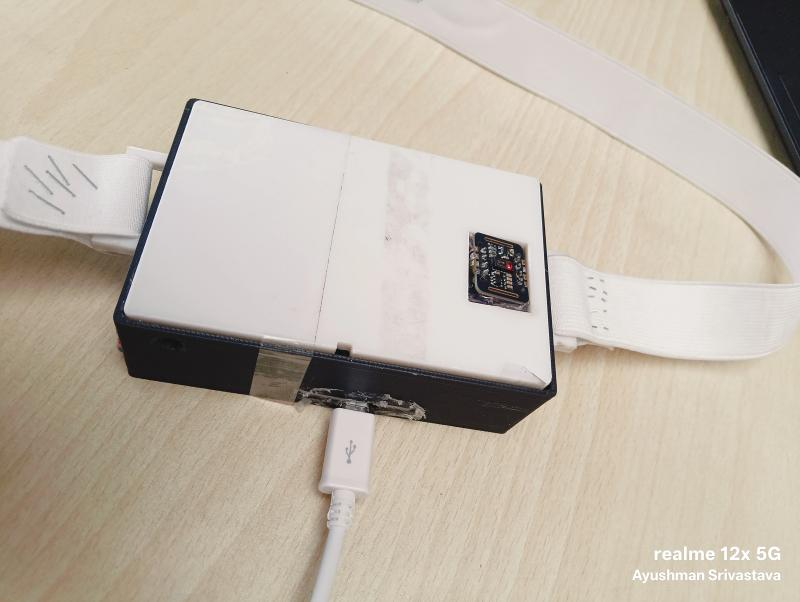
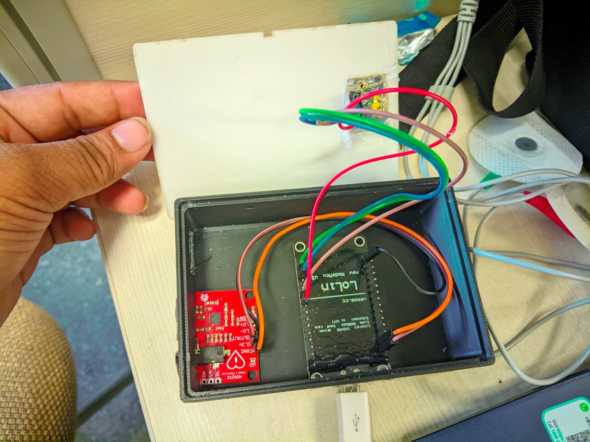
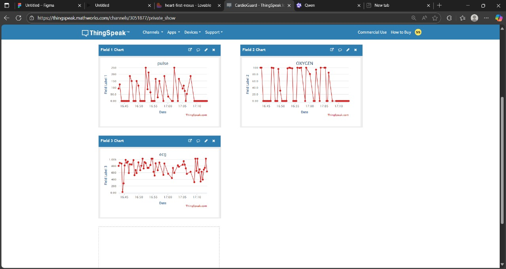
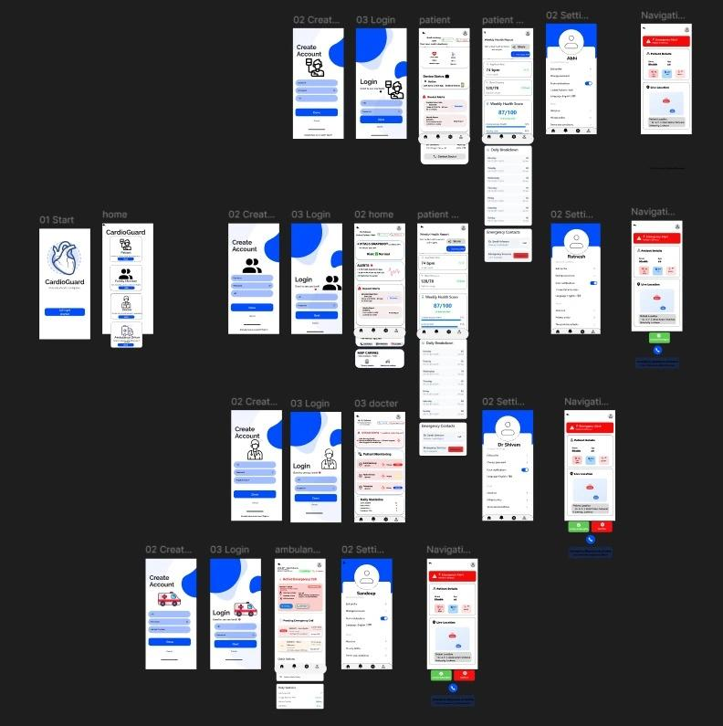
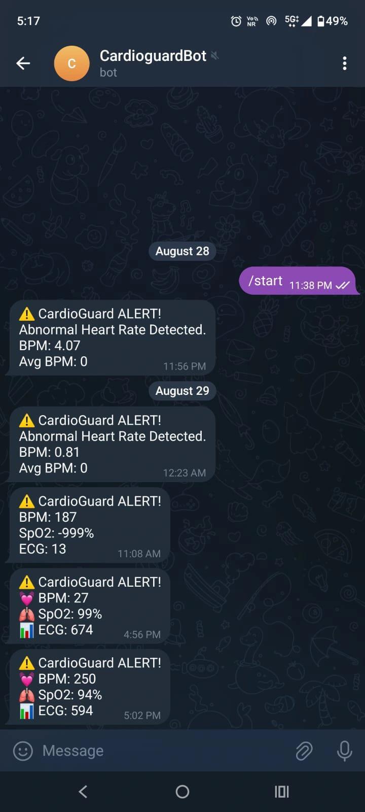

Overview: This project is part of Solution Squads (Team 9). The IoT Health Monitor, also called CardioGuard, is a wearable device that continuously tracks patient vitals such as ECG, heart rate (BPM), and SpO₂. It integrates low-cost sensors with an ESP8266 microcontroller and sends real-time data to the ThingSpeak IoT Cloud. Alerts are pushed instantly through the Telegram Bot API.
📑 View Full Project Report (PDF)
🎨 Figma UI Prototype (Patient, Family, Doctor, Ambulance)
📑 Project Description




